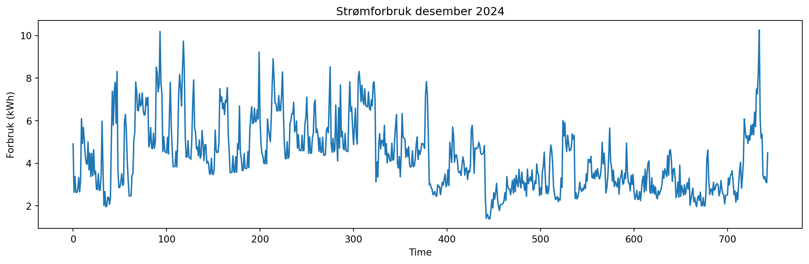
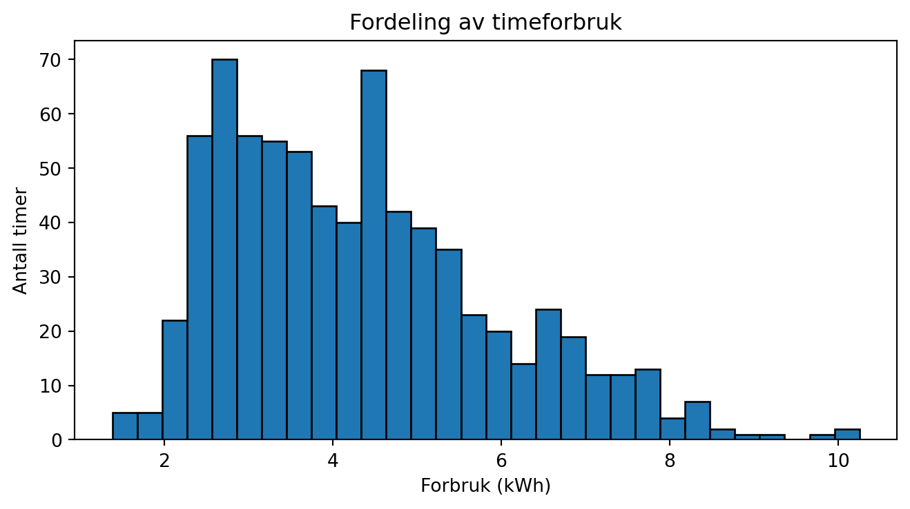

import pandas as pd
import numpy as np
import matplotlib.pyplot as pltIntroduksjon til Pandas
LLM-skrevet supplement til HON2200
Dette notatet er skrevet av en LLM som supplement til forelesningsmateriell i HON2200.
Læringsmål
Etter å ha jobbet gjennom dette notatet skal du kunne:
- Forstå hva en DataFrame er
- Lese inn data fra CSV- og JSON-filer
- Velge ut rader og kolonner fra en DataFrame
- Bruke
groupbyfor å aggregere data - Visualisere data med matplotlib
Hva er Pandas?
Pandas er et Python-bibliotek for databehandling og analyse. Navnet kommer fra “Panel Data” - et begrep fra økonometri. De to viktigste datastrukturene i Pandas er:
- Series: En endimensjonal array med labels (som en kolonne)
- DataFrame: En todimensjonal tabell med rader og kolonner
Importere Pandas
Vi starter alltid med å importere pandas. Konvensjonen er å kalle det pd:
Lage en DataFrame fra scratch
La oss lage en enkel DataFrame med noen data:
# Lage en DataFrame fra en dictionary
data = {
'navn': ['Anna', 'Bjørn', 'Cecilie', 'David'],
'alder': [25, 32, 28, 45],
'by': ['Oslo', 'Bergen', 'Oslo', 'Trondheim']
}
df = pd.DataFrame(data)
df| navn | alder | by | |
|---|---|---|---|
| 0 | Anna | 25 | Oslo |
| 1 | Bjørn | 32 | Bergen |
| 2 | Cecilie | 28 | Oslo |
| 3 | David | 45 | Trondheim |
Lese data fra fil
I praksis lager vi sjelden DataFrames fra scratch. Vi leser heller inn data fra filer.
Lese CSV-filer
CSV (Comma-Separated Values) er et vanlig format for tabulære data:
# Lese inn strømforbruksdata
df_forbruk = pd.read_csv("../data/meteringvalues-dec-2024.csv", sep=";", decimal=",")
df_forbruk.head()| Fra | Til | KWH 60 Forbruk | Kvalitet | |
|---|---|---|---|---|
| 0 | 01.12.2024 00:00 | 01.12.2024 01:00 | 4.908 | Avlest |
| 1 | 01.12.2024 01:00 | 01.12.2024 02:00 | 2.641 | Avlest |
| 2 | 01.12.2024 02:00 | 01.12.2024 03:00 | 3.378 | Avlest |
| 3 | 01.12.2024 03:00 | 01.12.2024 04:00 | 2.637 | Avlest |
| 4 | 01.12.2024 04:00 | 01.12.2024 05:00 | 2.633 | Avlest |
Merk at vi må spesifisere:
sep=";"fordi filen bruker semikolon som skilletegn (ikke komma)decimal=","fordi norske tall bruker komma som desimaltegn
Lese JSON-filer
JSON er et annet vanlig format, spesielt for data fra APIer:
import json
# Lese JSON-fil
with open("../data/weather_blindern.json") as f:
json_data = json.load(f)
# Se på strukturen
print(type(json_data))
print(json_data.keys() if isinstance(json_data, dict) else "Not a dict")<class 'dict'>
dict_keys(['@context', '@type', 'apiVersion', 'license', 'createdAt', 'queryTime', 'currentItemCount', 'itemsPerPage', 'offset', 'totalItemCount', 'currentLink', 'data'])Utforske en DataFrame
Når vi har lest inn data, vil vi gjerne utforske dem:
# Vis de første radene
print("Første 5 rader:")
print(df_forbruk.head())Første 5 rader:
Fra Til KWH 60 Forbruk Kvalitet
0 01.12.2024 00:00 01.12.2024 01:00 4.908 Avlest
1 01.12.2024 01:00 01.12.2024 02:00 2.641 Avlest
2 01.12.2024 02:00 01.12.2024 03:00 3.378 Avlest
3 01.12.2024 03:00 01.12.2024 04:00 2.637 Avlest
4 01.12.2024 04:00 01.12.2024 05:00 2.633 Avlest# Informasjon om kolonner og datatyper
print("\nInformasjon om DataFrame:")
print(df_forbruk.info())
Informasjon om DataFrame:
<class 'pandas.core.frame.DataFrame'>
RangeIndex: 744 entries, 0 to 743
Data columns (total 4 columns):
# Column Non-Null Count Dtype
--- ------ -------------- -----
0 Fra 744 non-null object
1 Til 744 non-null object
2 KWH 60 Forbruk 744 non-null float64
3 Kvalitet 744 non-null object
dtypes: float64(1), object(3)
memory usage: 23.4+ KB
None# Statistisk oppsummering
print("\nStatistisk oppsummering:")
print(df_forbruk.describe())
Statistisk oppsummering:
KWH 60 Forbruk
count 744.000000
mean 4.321929
std 1.609915
min 1.381000
25% 3.015500
50% 4.109500
75% 5.245250
max 10.254000Velge ut data
Velge kolonner
# Velge én kolonne (returnerer en Series)
forbruk = df_forbruk['KWH 60 Forbruk']
print(type(forbruk))
print(forbruk.head())<class 'pandas.core.series.Series'>
0 4.908
1 2.641
2 3.378
3 2.637
4 2.633
Name: KWH 60 Forbruk, dtype: float64# Velge flere kolonner (returnerer en DataFrame)
utvalg = df_forbruk[['Fra', 'KWH 60 Forbruk']]
utvalg.head()| Fra | KWH 60 Forbruk | |
|---|---|---|
| 0 | 01.12.2024 00:00 | 4.908 |
| 1 | 01.12.2024 01:00 | 2.641 |
| 2 | 01.12.2024 02:00 | 3.378 |
| 3 | 01.12.2024 03:00 | 2.637 |
| 4 | 01.12.2024 04:00 | 2.633 |
Velge rader med betingelser
# Filtrere rader der forbruket er over 5 kWh
høyt_forbruk = df_forbruk[df_forbruk['KWH 60 Forbruk'] > 5]
print(f"Antall timer med forbruk over 5 kWh: {len(høyt_forbruk)}")
høyt_forbruk.head()Antall timer med forbruk over 5 kWh: 216| Fra | Til | KWH 60 Forbruk | Kvalitet | |
|---|---|---|---|---|
| 9 | 01.12.2024 09:00 | 01.12.2024 10:00 | 6.096 | Avlest |
| 11 | 01.12.2024 11:00 | 01.12.2024 12:00 | 5.685 | Avlest |
| 12 | 01.12.2024 12:00 | 01.12.2024 13:00 | 5.060 | Avlest |
| 31 | 02.12.2024 07:00 | 02.12.2024 08:00 | 5.977 | Avlest |
| 41 | 02.12.2024 17:00 | 02.12.2024 18:00 | 5.274 | Avlest |
Gruppering med groupby
groupby er en av de kraftigste funksjonene i Pandas. Den lar oss gruppere data og beregne statistikk per gruppe.
# La oss lage et eksempel med bøker
df_books = pd.read_csv("../data/bestsellers_with_categories.csv")
df_books.head()| Name | Author | User Rating | Reviews | Price | Year | Genre | |
|---|---|---|---|---|---|---|---|
| 0 | 10-Day Green Smoothie Cleanse | JJ Smith | 4.7 | 17350 | 8 | 2016 | Non Fiction |
| 1 | 11/22/63: A Novel | Stephen King | 4.6 | 2052 | 22 | 2011 | Fiction |
| 2 | 12 Rules for Life: An Antidote to Chaos | Jordan B. Peterson | 4.7 | 18979 | 15 | 2018 | Non Fiction |
| 3 | 1984 (Signet Classics) | George Orwell | 4.7 | 21424 | 6 | 2017 | Fiction |
| 4 | 5,000 Awesome Facts (About Everything!) (Natio... | National Geographic Kids | 4.8 | 7665 | 12 | 2019 | Non Fiction |
# Gjennomsnittlig rating per sjanger
df_books.groupby('Genre')['User Rating'].mean()Genre
Fiction 4.648333
Non Fiction 4.595161
Name: User Rating, dtype: float64# Flere aggregeringer samtidig
df_books.groupby('Genre').agg({
'User Rating': 'mean',
'Reviews': 'sum',
'Price': ['min', 'max']
})| User Rating | Reviews | Price | ||
|---|---|---|---|---|
| mean | sum | min | max | |
| Genre | ||||
| Fiction | 4.648333 | 3764110 | 0 | 82 |
| Non Fiction | 4.595161 | 2810195 | 0 | 105 |
Visualisering
Pandas har innebygd støtte for plotting via matplotlib:
# Plotte strømforbruk
plt.figure(figsize=(12, 4))
plt.plot(df_forbruk['KWH 60 Forbruk'])
plt.xlabel('Time')
plt.ylabel('Forbruk (kWh)')
plt.title('Strømforbruk desember 2024')
plt.tight_layout()
plt.show()
# Histogram over forbruk
plt.figure(figsize=(8, 4))
plt.hist(df_forbruk['KWH 60 Forbruk'], bins=30, edgecolor='black')
plt.xlabel('Forbruk (kWh)')
plt.ylabel('Antall timer')
plt.title('Fordeling av timeforbruk')
plt.show()
Håndtere manglende data
Virkelige datasett har ofte manglende verdier (NaN):
# Sjekke for manglende verdier
print("Manglende verdier per kolonne:")
print(df_forbruk.isnull().sum())Manglende verdier per kolonne:
Fra 0
Til 0
KWH 60 Forbruk 0
Kvalitet 0
dtype: int64# Fjerne rader med manglende verdier
df_clean = df_forbruk.dropna()
print(f"Rader før: {len(df_forbruk)}, Rader etter: {len(df_clean)}")Rader før: 744, Rader etter: 744Oppsummering
Du har nå lært:
- Lese data:
pd.read_csv(),pd.read_json() - Utforske:
.head(),.info(),.describe() - Velge ut:
df['kolonne'],df[['kol1', 'kol2']],df[betingelse] - Gruppere:
df.groupby('kolonne').agg(...) - Visualisere:
plt.plot(),plt.hist() - Manglende data:
.isnull(),.dropna()
Øvingsoppgaver
- Last inn
bestsellers_with_categories.csvog finn den boken med høyest rating - Hvor mange bøker er det i hver sjanger?
- Hva er gjennomsnittsprisen for bøker utgitt etter 2015?
- Lag et histogram over prisene